Minikube Dev Environment for K8s Jobs¶
Kubernetes Job Support is added in Nautobot v2.4.0. This documentation is a end-to-end development guide on topics from how to set up your local Kubernetes cluster with minikube and how to run a Nautobot Job in a Kubernetes job pod.
Preliminary Setup¶
First you need to install minikube, go to the offical get started page to learn how to download minikube for your specific OS and architecture.
Once minikube is downloaded, create and start your minikube cluster with the following command:
You should see the following output:
😄 minikube v1.34.0 on Darwin 14.4 (arm64)
✨ Using the docker driver based on existing profile
👍 Starting "minikube" primary control-plane node in "minikube" cluster
🚜 Pulling base image v0.0.45 ...
🏃 Updating the running docker "minikube" container ...
🐳 Preparing Kubernetes v1.31.0 on Docker 27.2.0 ...
🔎 Verifying Kubernetes components...
▪ Using image gcr.io/k8s-minikube/storage-provisioner:v5
🌟 Enabled addons: storage-provisioner, default-storageclass
🏄 Done! kubectl is now configured to use "minikube" cluster and "default" namespace by default
Next you need kubectl to interact with the new cluster you just created. See Kubernetes official documentation on how to download kubectl for your respective operating system.
Once you have kubectl downloaded and installed, run the following command to ensure the version you installed is up-to-date:
You should see the following output:
You also need to check if your default service account is enabled to create jobs, you can check the permission by executing the following command:
If the output from the above command is yes, then you are all good to go. However, if the output is no, then you will need to create a role binding to grant the default user appropriate permissions. You can achieve this by running the following command:
kubectl create rolebinding admin-namespace-default-new --clusterrole=admin --serviceaccount=default:default --namespace=default
This command will assign the admin role to your default service account in the namespace default. Check out Kubernetes RBAC authorization page to learn how to create more granular role and permission assignments.
You can run the kubectl auth can-i --as=system:serviceaccount:default:default create jobs -n default again and this time the output should be yes.
Starting Required Deployments¶
Check Required Files¶
If this is your first time installing minikube and creating a new cluster, there should be nothing running on the cluster yet. Assuming that your current working directory is in the nautobot folder, what you need to do is to confirm that you have all the deployment files that you need in the /development/kubernetes folder.
You can confirm that by running the following command:
You should see the following output:
celery-beat-deployment.yaml media-root-persistentvolumeclaim.yaml nautobot-service.yaml
db-deployment.yaml nautobot-cm1-configmap.yaml pgdata-nautobot-persistentvolumeclaim.yaml
db-service.yaml nautobot-cm2-configmap.yaml redis-deployment.yaml
dev-env-configmap.yaml nautobot-deployment.yaml redis-service.yaml
docker-compose.min.yml
You should see several yaml files with post-fixes like *-deployment.yaml, *-service.yaml, *-persistentvolumeclaim.yaml, and *-configmap.yaml.
Build an up-to-date Nautobot Docker Image¶
An up-to-date Nautobot local Docker image named local/nautobot-dev:local-${NAUTOBOT_VER}-py${PYTHON_VER} is required before you start building your kubernetes deployments. The default NAUTOBOT_VER is set to 2.4 and the default PYTHON_VER is set to 3.12. If you have a different version for either variable, you will need to replace every occurrence of local/nautobot-dev:local-2.4-py3.12 in all of the development/kubernetes/*.yaml files to make sure that minikube picks up the correct local Nautobot image from your Docker environment.
Run the following command to point your terminal to use the docker daemon inside minikube. This will ensure that your up-to-date local image named local/nautobot-final-dev:local-${NAUTOBOT_VER}-py${PYTHON_VER} is used when you build your kubernetes deployments.
Now you can build your Nautobot image locally using the invoke build command. After the build is complete, you are ready to build your kubernetes deployments.
Starting the Deployments and Services¶
Once you have confirmed that you have all the files listed above. You can start the required deployments and services:
To start all deployments:
You should see the following output:
deployment.apps/celery-beat created
deployment.apps/db created
deployment.apps/nautobot created
deployment.apps/redis created
You can confirm the health of the deployment by running the following command:
You should see the following output:
NAME READY UP-TO-DATE AVAILABLE AGE
celery-beat 1/1 1 1 12m
db 1/1 1 1 12m
nautobot 1/1 1 1 12m
redis 1/1 1 1 14m
To start all services:
You should see the following output:
You can confirm the health of the each service by running the following command:
You should see the following output:
NAME TYPE CLUSTER-IP EXTERNAL-IP PORT(S) AGE
db ClusterIP 10.111.0.30 <none> 5432/TCP 12m
kubernetes ClusterIP 10.96.0.1 <none> 443/TCP 12m
nautobot ClusterIP 10.106.32.53 <none> 8080/TCP 12m
redis ClusterIP 10.102.99.143 <none> 6379/TCP 12m
Starting the Configuration Maps and Persistent Volume Claims¶
Once you have started all deployments and services. You can start the required configuration maps and persistent volume claims:
To start all configuration maps:
You should see the following output:
You can confirm that those configuration maps are created by running the following command:
You should see the following output:
To start all persistent volume claims:
You should see the following output:
You can confirm that those persistent volume claims are created by running the following command:
You should see the following output:
NAME STATUS VOLUME CAPACITY ACCESS MODES STORAGECLASS VOLUMEATTRIBUTESCLASS AGE
media-root Bound pvc-011f484b-2ccf-4fe0-953b-289a13ad0480 200Mi RWO standard <unset> 2m35s
pgdata-nautobot Bound pvc-5954eb3f-75e3-4f6b-9b9c-a91e40ea96bf 200Mi RWO standard <unset> 2m35s
To confirm all required kubernetes entities are up and running, run the following command:
You should see the following output, note that pods are automatically created when you create deployments:
NAME READY STATUS RESTARTS AGE
pod/celery-beat-6fb67477b7-rsw62 1/1 Running 0 30m
pod/db-8687b48964-gtvtc 1/1 Running 0 30m
pod/nautobot-679bdc765-pl2ld 1/1 Running 0 30m
pod/redis-7cc58577c-tl5sq 1/1 Running 0 30m
NAME TYPE CLUSTER-IP EXTERNAL-IP PORT(S) AGE
service/db ClusterIP 10.111.0.30 <none> 5432/TCP 30m
service/kubernetes ClusterIP 10.96.0.1 <none> 443/TCP 30m
service/nautobot ClusterIP 10.106.32.53 <none> 8080/TCP 30m
service/redis ClusterIP 10.102.99.143 <none> 6379/TCP 30m
NAME READY UP-TO-DATE AVAILABLE AGE
deployment.apps/celery-beat 1/1 1 1 30m
deployment.apps/db 1/1 1 1 30m
deployment.apps/nautobot 1/1 1 1 30m
deployment.apps/redis 1/1 1 1 30m
Port Forward to Local Host¶
You can use the port-forward command from kubectl to make your Nautobot instance on the kubernetes cluster accessible in localhost:8080:
The output should be:
Forwarding from 127.0.0.1:8080 -> 8080
Forwarding from [::1]:8080 -> 8080
Handling connection for 8080
Now go to your web browser and navigate to localhost:8080. You should see your Nautobot instance running.
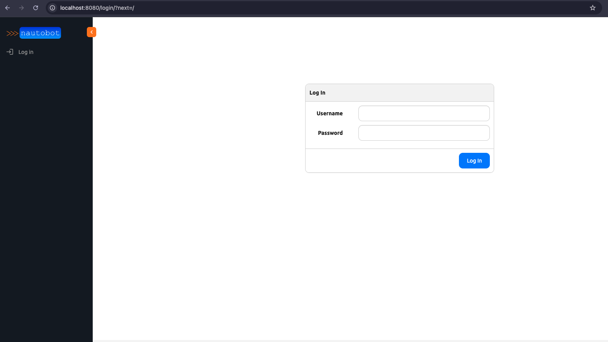
Run a Kubernetes Job¶
Configure a New Job Queue of Type Kubernetes¶
Go to the Navigation bar on your left hand side and look at the Jobs Section. You should see Job Queues at the very end of the section. Click on the plus button next to the Job Queues entry and this will take you to a form for creating a new job queue.
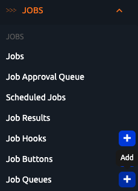
You can give the name "kubernetes" to the new job queue and select "Kubernetes" from the Queue Type dropdown.
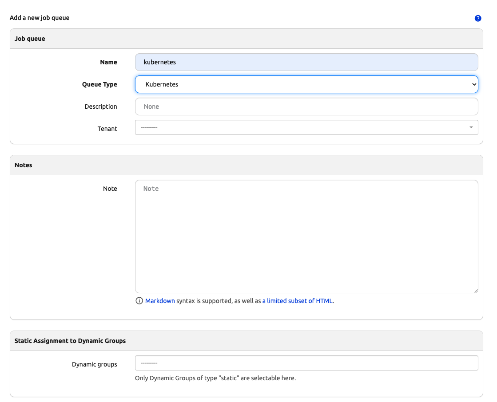
Scroll down and click on the create button. A new Job Queue with name "kubernetes" and with type Kubernetes should be created.
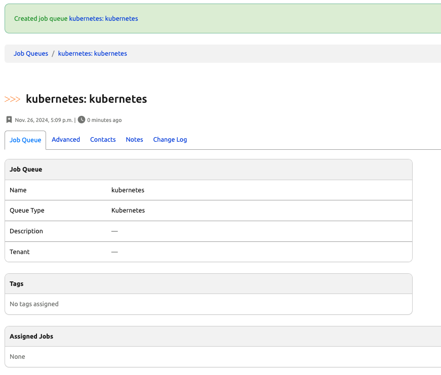
Assign that Job Queue to a Job¶
Go to a Job's edit form and assign the newly created kubernetes job queue to the job. You will be using the "Export Object List" system job here.
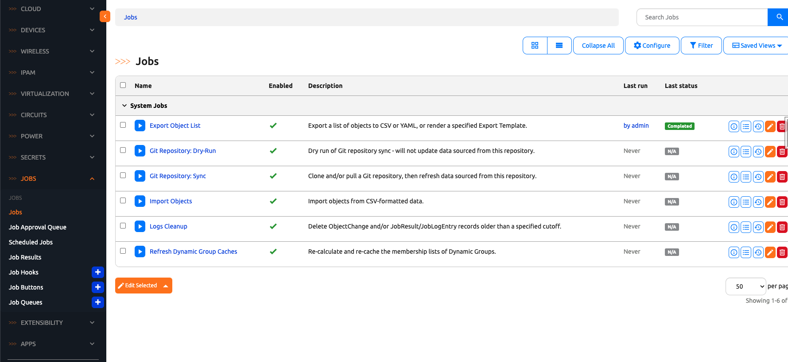
Check the override default value checkbox on the Job Queues field and select the kubernetes job queue from the dropdown.
Check the override default value checkbox on the Default Job Queue field and select the kubernetes job queue from the dropdown.
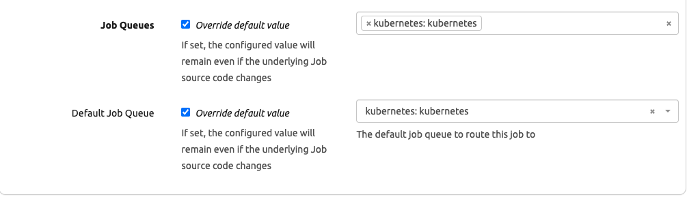
Click on the update button when you are finished.
Run the Job¶
After clicking on the update button after the previous step, you should be redirected to the table of jobs. Click on the link that says "Export Object List". This should take you to the Job Run Form.
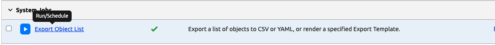
Select an option for the Content Type field dropdown and notice that the Job queue is already filled out with the kubernetes job queue that you assigned to this job from previous steps. So you do not need to make any changes there.
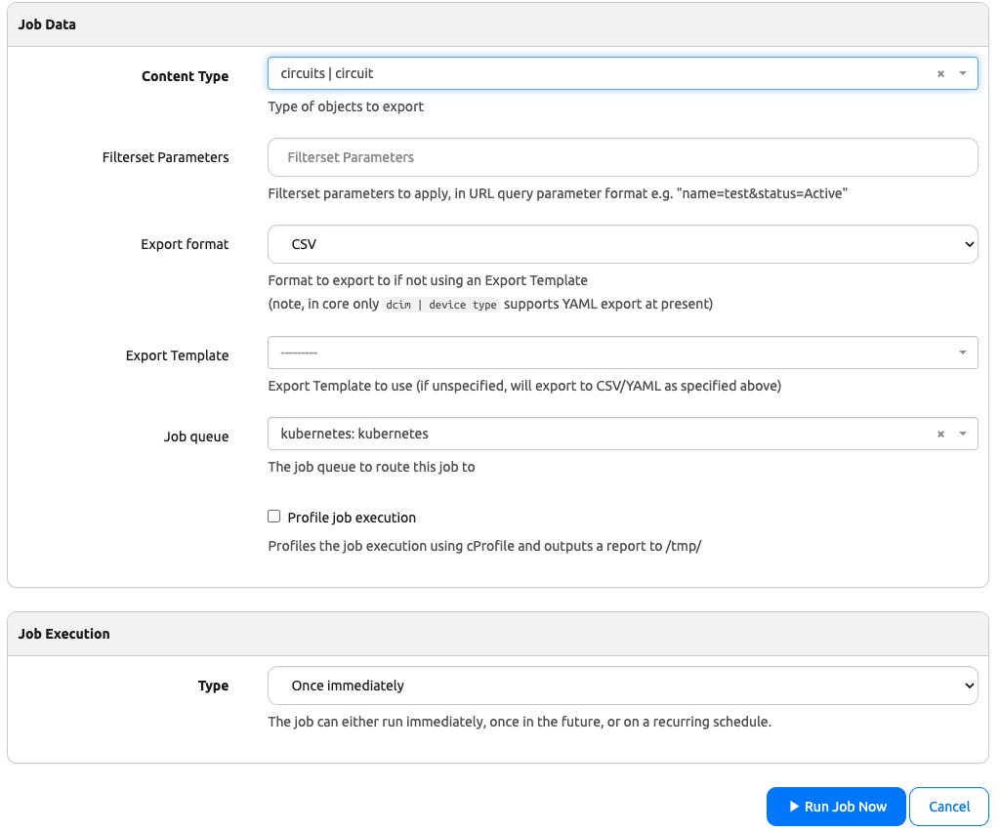
Click on the "Run Job Now" button and you should be directed to the job result page.
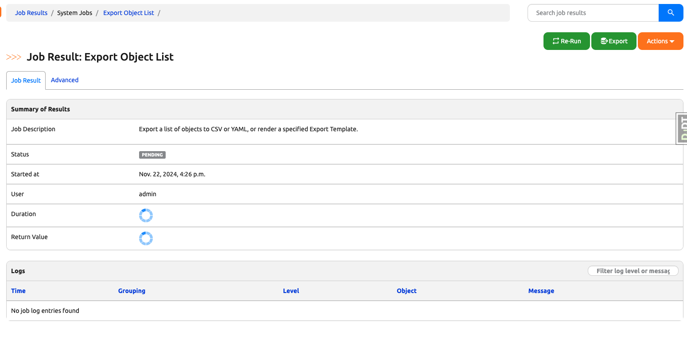
Inspect the Job Result¶
You can inspect the job result and the job logs in this page. Notice the two job log entries that reads something like "Creating job pod (pod-name) in namespace default" and "Reading job pod (pod-name) in namespace default". Those entries indicate that a Kubernetes Job pod was executing the job for you.
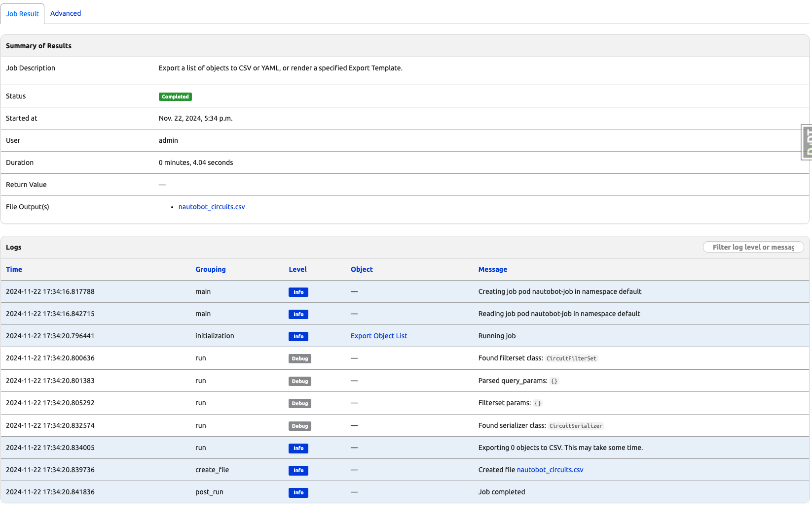
Running a Scheduled Job¶
You can run scheduled jobs as well. In order to run scheduled jobs, you do need Celery Beat which should already be running from previous steps. To confirm that the Celery Beat is running, you need to retrieve the Celery Beat pod name by running the command kubectl get pods. You should see the following output or something similar, copy the pod name with prefix celery-beat-*.
NAME READY STATUS RESTARTS AGE
celery-beat-6fb67477b7-rsw62 1/1 Running 0 10m
db-8687b48964-gtvtc 1/1 Running 0 10m
nautobot-679bdc765-pl2ld 1/1 Running 0 10m
redis-7cc58577c-tl5sq 1/1 Running 0 10m
you can run the command kubectl logs <celery-beat-pod-name> -f and you should see the following output or something similar:
LocalTime -> 2024-11-20 18:49:41
Configuration ->
. broker -> redis://:**@redis:6379/0
. loader -> celery.loaders.app.AppLoader
. scheduler -> nautobot.core.celery.schedulers.NautobotDatabaseScheduler
. logfile -> [stderr]@%INFO
. maxinterval -> 5.00 seconds (5s)
[2024-11-20 18:49:41,161: INFO/MainProcess] beat: Starting...
Now you are going to create a new Scheduled Export Object List Job. Starting from Nautobot homepage, you can go to the Jobs dropdown on the left navigation menu and navigate to the job list view.
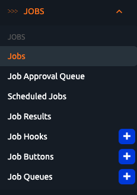
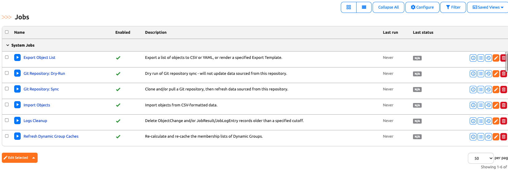
Click on the Run/Schedule link for Export Object List Job.
Fill in the data shown below (for the "Starting date and time" field, pick a date and time that is close to the current date and time) and click on the "Schedule Job" button on the bottom right.
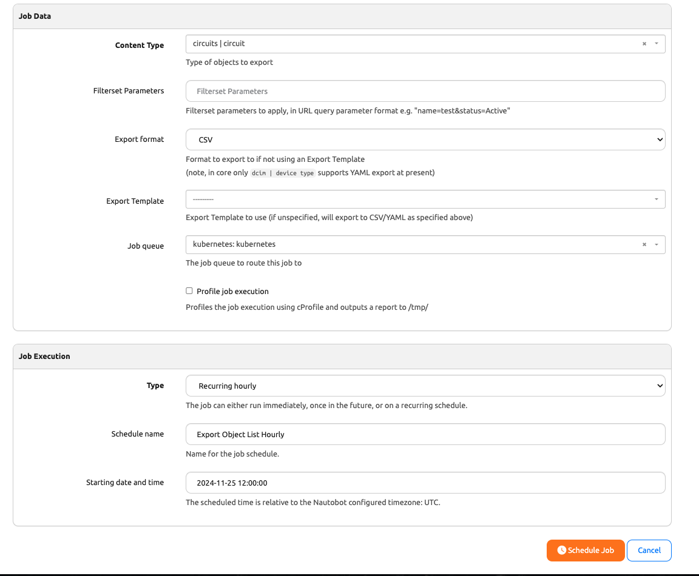
To confirm that the Scheduled Job is running, you go back to the terminal that was logging Celery Beat. You should see the following logs or something similar:
[2024-11-21 02:09:57,756: INFO/MainProcess] DatabaseScheduler: Schedule changed.
[2024-11-21 02:09:57,774: INFO/MainProcess] Scheduler: Sending due task Export Object List Hourly_85413d3f-1342-4adf-8d80-11e740ebb907 (nautobot.extras.jobs.run_job)
02:09:57.782 INFO nautobot.extras.utils utils.py run_kubernetes_job_and_return_job_result() :
Creating job pod nautobot-job in namespace default
[2024-11-21 02:09:57,782: INFO/MainProcess] Creating job pod nautobot-job in namespace default
02:09:57.802 INFO nautobot.extras.utils utils.py run_kubernetes_job_and_return_job_result() :
Reading job pod nautobot-job in namespace default
[2024-11-21 02:09:57,802: INFO/MainProcess] Reading job pod nautobot-job in namespace default
[2024-11-21 02:09:57,837: INFO/MainProcess] DatabaseScheduler: Schedule changed.
You can also confirm if the job is running or is completed by running kubectl get jobs and kubectl get pods in another terminal.
Go back to your browser and click on the Job Results entry from the Jobs navigation menu.
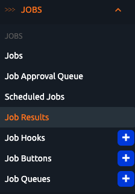
Inspect the Job Result
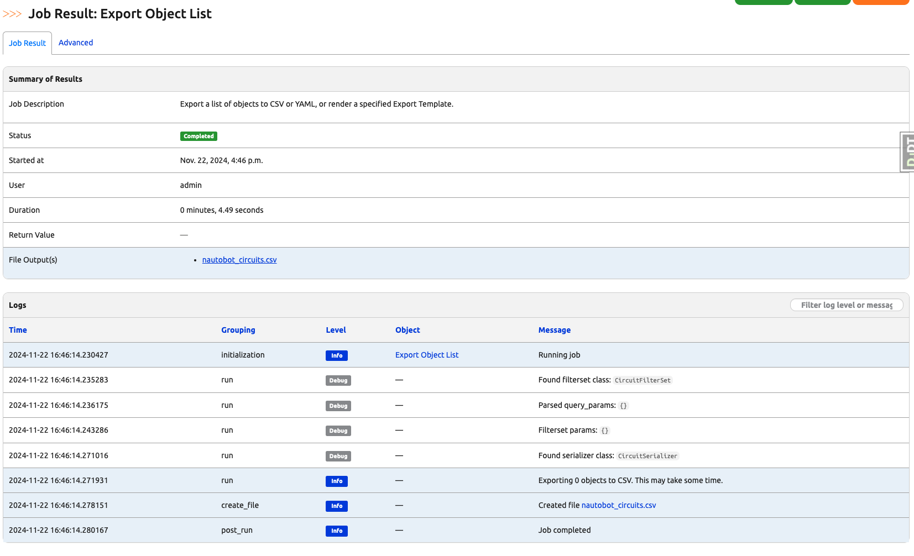
After Running a Job¶
Good news is that there is nothing for you to do after running a kubernetes job. The job pod with prefix nautobot-job-pod-* will clean up itself. Running kubectl get pods to confirm that nautobot-job-pod-<pod_id> no longer exists.
NAME READY STATUS RESTARTS AGE
celery-beat-6fb67477b7-rsw62 1/1 Running 0 1h
db-8687b48964-gtvtc 1/1 Running 0 1h
nautobot-679bdc765-pl2ld 1/1 Running 0 1h
redis-7cc58577c-tl5sq 1/1 Running 0 1h
You can also run kubectl get jobs to confirm that nautobot-job-<pod_id> no longer exists as well.